Motion — the machine moving, filmed and measured
Leif, 2026-09-02: “is the neck of ours as dynamic? show me renders of the mechanics like our cad system walking, zoom in on joints as they move and the head kmvoing around and the legs moving around.”
23 videos of OUR rebuilt parts moving under Pollen's own published policies —
the whole body walking, and every joint in close-up while it moves — with the measurement each
clip is evidence for. Nothing here is an animation: every frame is a MuJoCo state, and every
angle on the caption is that frame's qpos.
tools/gen_motion.py
model sim/microduck_ours.xml
23 mp4 · 23 gif · 23 contact sheets · 161.1 MB of video
1Is the neck of ours as dynamic?
The question, answered first, with the table it rests on and the scope it does not cover.
Leif, 2026-09-02: 'is the neck of ours as dynamic?'
PASS, with the scope stated below.
What the verdict rests on
- The head mechanism we render is Pollen's own: axes, joint ranges, damping, friction loss, armature, actuator kp and forcerange carry identical attribute values between reference/pollen-microduck-rl/robot_walk.xml and sim/microduck_ours.xml - only class='visual' mesh references were re-pointed to our rebuilt parts (sim/swap_meshes.py; out/sim/swap_report.json). So range, gearing and inertia are not ours to be right or wrong about.
- The motion is produced by Pollen's own published BEST_alpha_stand ONNX policy at Pollen's 50 Hz loop with the browser simulator's EMA on the head slots.
- Measured here: three of the four head joints reach 85-100 % of their MJCF range under command, at up to 454.8 deg/s (75.8 rpm), which is inside the XL330-M288-T's 103 rpm no-load speed at 5.0 V.
- The whole sweep stayed inside the real servo's torque: peak head-joint actuator force 0.4185 N.m (head_yaw), under the XL330-M288-T's 0.52 N.m stall at 5.0 V. Nothing in these videos asks more of the neck than the shipped servo can give.
- The 'stiff neck' Leif saw in the walk video was a ZERO head command, not the mechanics: sim/run_policy.py schedule() drives twist only and leaves cmd[3:7] at 0.
What it does not rest on
- It is not a claim that OUR head SHELL geometry matches the product - that is COMPARISON.html finding 1, still CANNOT DETERMINE (GOAL.md:105). Only the visual mesh changed; the head's inertia in this sim is still Pollen's.
- It is not a claim about the real robot's achievable head speed. Nothing public reports it, and no video shows the head driven to a limit.
- It is not a general torque validation: the MJCF ceiling is 0.96 N.m per joint, ABOVE the XL330-M288-T datasheet stall of 0.52 N.m at 5.0 V / 0.60 N.m at 6.0 V, so a different motion could ask the sim for torque the real servo has not got. This sweep did not (peak 0.4185 N.m), but the model would let it.
- neck_pitch is the exception on travel: the policy holds it near +-18 deg however hard it is commanded (gain 0.296, 50.4 deg reached of the 150.0 deg the joint has). That is the POLICY using the head as a balance mass, not a mechanical limit - the kinematic probe below shows the joint itself is free over its whole range.
Against the real robot
CANNOT DETERMINE for a like-for-like speed comparison. The only public footage in which one head can be tracked frame by frame is images/gallery_chorale.mp4 (CATALOG.md:98); sim/head_real_video.py measures 17.018 deg of head-pitch travel and 62.19 deg/s peak there, but that clip is a scripted 'chorale' animation with a hand-held camera, so it bounds the real robot only from below. Ours exceeds that band on the same joint (153.20 deg travel, 255.5 deg/s), which settles 'not stiff' but not 'equal to the real thing'. What would settle it: a Dynamixel present-position / present-velocity log off a real unit, or footage of the head under a known command.
Every head joint was driven through its whole MJCF range one at a time (ramp to the limit, hold
1.2 s, ramp to the other limit, hold, return, rest) and then given a 1 Hz half-range sine,
all under Pollen's own BEST_alpha_stand policy at its 50 Hz loop with the browser
simulator's EMA (α 0.2) on the head command slots — 50 Hz, timestep 0.005 x decimation 4; head command slots cmd[3:7] EMA alpha 0.2. The run is 51.4 s.
| joint | MJCF range (deg) | span | travel measured (deg) | % of range | peak vel (deg/s) | gain | lag (ms) | torque (N·m) | travel walking |
|---|---|---|---|---|---|---|---|---|---|
| neck_pitch | -90.0000 … 60.0000 | 150.0000 | 50.4041 -23.05 … +27.35 | 33.60 % | 84.5710 | 0.296 | 140.0 | 0.1346 | 7.7947 |
| head_pitch | -90.0000 … 90.0000 | 180.0000 | 153.2008 -62.66 … +90.54 | 85.11 % | 255.5140 | 1.015 | 100.0 | 0.2914 | 4.5280 |
| head_yaw | -170.0000 … 170.0000 | 340.0000 | 289.4224 -149.57 … +139.85 | 85.12 % | 454.8410 | 0.944 | 100.0 | 0.4185 | 11.3424 |
| head_roll | -25.0000 … 25.0000 | 50.0000 | 49.9587 -24.79 … +25.17 | 99.92 % | 84.7070 | 1.087 | 80.0 | 0.0813 | 5.8682 |
neck_pitch— MJCF reference/pollen-microduck-rl/robot_walk.xml:181 (== sim/microduck_ours.xml:180, identical attributes)head_pitch— MJCF reference/pollen-microduck-rl/robot_walk.xml:194 (== sim/microduck_ours.xml:193, identical attributes)head_yaw— MJCF reference/pollen-microduck-rl/robot_walk.xml:203 (== sim/microduck_ours.xml:202, identical attributes)head_roll— MJCF reference/pollen-microduck-rl/robot_walk.xml:216 (== sim/microduck_ours.xml:215, identical attributes)
Actuator gains and force range: reference/pollen-microduck-rl/joints_properties.xml:28 (default class chosen_actuator: kp 0.55, forcerange -0.96 0.96).
The “stiff neck” in the walk video was a zero command, not the
mechanics. The last column is what each head joint does during the 8 s walk run:
sim/run_policy.py's schedule drives twist only and leaves cmd[3:7] at 0,
so the head is being asked to hold still. Given a command, the same model gives
153.20 deg of head pitch and 289.42 deg of head yaw.
Is the limit the mechanism, or the policy?
A kinematic probe answers that separately: the policy is removed, the all-collisions model is
used, and each joint is stepped across its whole MJCF range with the others at
DEFAULT_POSE, counting MuJoCo self-contacts.
| joint | MJCF range (deg) | self-collision-free (deg) | steps in contact | reading |
|---|---|---|---|---|
| neck_pitch | -90.000 … 60.000 | -90.000 … 60.000 | 0 / 121 | whole range free |
| head_pitch | -90.000 … 90.000 | -54.000 … 90.000 | 24 / 121 | fouls below -54.000° |
| head_yaw | -170.000 … 170.000 | -170.000 … 170.000 | 0 / 121 | whole range free |
| head_roll | -25.000 … 25.000 | -25.000 … 25.000 | 0 / 121 | whole range free |
So neck_pitch is free over its whole 150.0 deg and still only reaches
50.4 deg under the policy (tracking gain 0.2962): that is the policy holding the
head as a balance mass, not a mechanical stop. head_pitch is the one joint whose limit
is geometric — below -54.0 deg the head fouls the neck and trunk, which is
exactly where the policy stops it (-62.66 deg reached).
Does one command slot move only its own joint?
Peak excursion of every head joint when each command slot is driven alone — the diagonal is the commanded joint, everything off it is the mechanism and the balance controller reacting.
| slot | driven | neck_pitch | head_pitch | head_yaw | head_roll |
|---|---|---|---|---|---|
| 3 | neck_pitch | 31.3208 | 20.4636 | 7.4956 | 4.5732 |
| 4 | head_pitch | 37.0333 | 87.8488 | 7.3865 | 2.3026 |
| 5 | head_yaw | 6.8469 | 10.8334 | 148.2675 | 10.8695 |
| 6 | head_roll | 2.0370 | 3.0297 | 2.1004 | 26.6102 |
Inside the shipped servo?
ROBOTIS Dynamixel XL330-M288-T (15 per robot; 4 of them in the neck/head chain). Datasheet (https://emanual.robotis.com/docs/en/dxl/x/xl330-m288/ (fetched 2026-09-02); identity + sourcing already verified in out/verify/electronics_verify.json components[4]): no-load 618.0 deg/s at 5.0 V, stall 0.52 N·m at 5.0 V. This sweep's fastest head joint is head_yaw at 454.8 deg/s and its hardest-working joint is head_yaw at 0.4185 N·m — both inside those numbers. The MJCF gives every joint forcerange -0.96..0.96 N.m (reference/pollen-microduck-rl/joints_properties.xml:28), ABOVE the XL330-M288-T's 0.60 N.m stall at its 6.0 V datasheet maximum. Pollen's own docs flag that the runtime may feed the servos from the 2S pack (6.6-8.2 V), which is outside the datasheet - unresolved (out/verify/electronics_verify.json components[4].voltage).
Nothing fell: minimum trunk height 0.11534 m, maximum tilt 1.403 deg over the whole sweep (rule: fell := trunk z < 0.06 m or |roll|,|pitch| > 60 deg (sim/run_policy.py:37-38)).
2Walking, with the joints in close-up
Pollen's BEST_alpha_walking policy on OUR rebuilt meshes, filmed and measured. 0.25 m/s commanded, 8.000 s, 0.7925 m walked at 0.1055 m/s mean, gait period 0.4000 s (300 steps/min, autocorrelation peak 0.9222), stride 0.0423 m. Maximum trunk tilt 4.11 deg; trunk height 0.1135 m minimum. It did not fall.
Every clip below tracks the body it is filming — the camera lookat is that body's
world position on every frame — so a joint stays in the middle of its own close-up while the robot
walks away. Each caption carries the live joint angles drawn into the frame. All 9 were
re-read frame by frame after encoding: 9 of 9 PASS; a blank, white or
frozen frame is a defect, not a video.
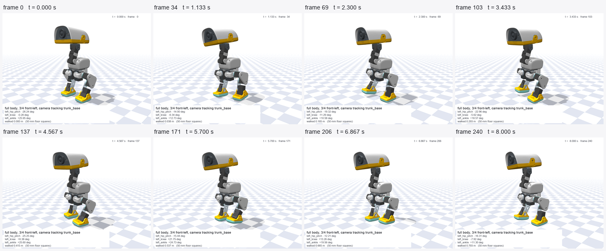
{kind=link}
Camera: track trunk_base, azimuth 225 deg, elevation -10 deg, distance 0.520 m. 241 frames at 30 fps (8.033 s). Read back frame by frame after encoding: PASS — min frame std 42.67 (blank < 4.0), max inter-frame delta 7.1343, blank frames 0, frozen pairs 0. mp4 5.91 MB · GIF 4.92 MB
{kind=link}
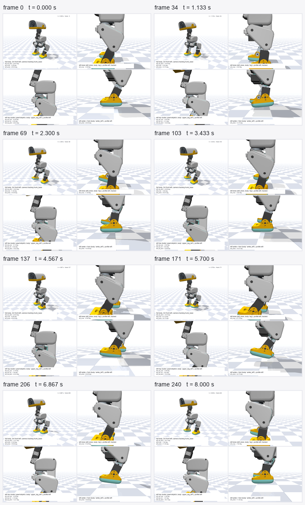
{kind=link}
Camera: walk_body: az 225 el -10 d 0.520; walk_knee_prof: az 270 el -6 d 0.170; walk_hip_prof: az 270 el -6 d 0.190; walk_ankle_prof: az 270 el -4 d 0.160. 241 frames at 30 fps (8.033 s). Read back frame by frame after encoding: PASS — min frame std 46.99 (blank < 4.0), max inter-frame delta 12.1784, blank frames 0, frozen pairs 0. mp4 11.38 MB · GIF 5.22 MB
{kind=link}
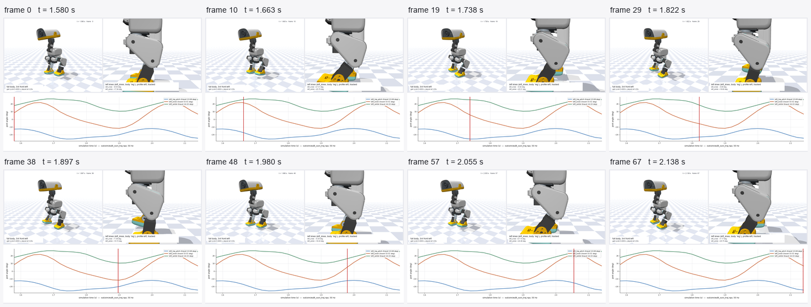
{kind=link}
Camera: walk_body (az 225) + walk_knee_prof (az 270), both tracked. 68 frames at 30 fps (2.267 s). Read back frame by frame after encoding: PASS — min frame std 41.04 (blank < 4.0), max inter-frame delta 2.7156, blank frames 0, frozen pairs 0. mp4 1.56 MB · GIF 3.19 MB
{kind=link}
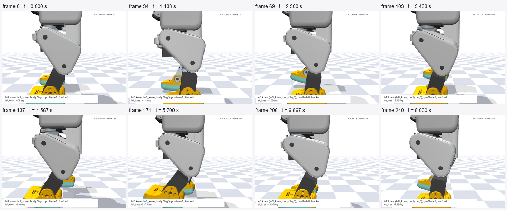
{kind=link}
Camera: track leg, azimuth 270 deg, elevation -6 deg, distance 0.170 m. 241 frames at 30 fps (8.033 s). Read back frame by frame after encoding: PASS — min frame std 50.91 (blank < 4.0), max inter-frame delta 16.0855, blank frames 0, frozen pairs 0. mp4 3.11 MB · GIF 3.38 MB
{kind=link}
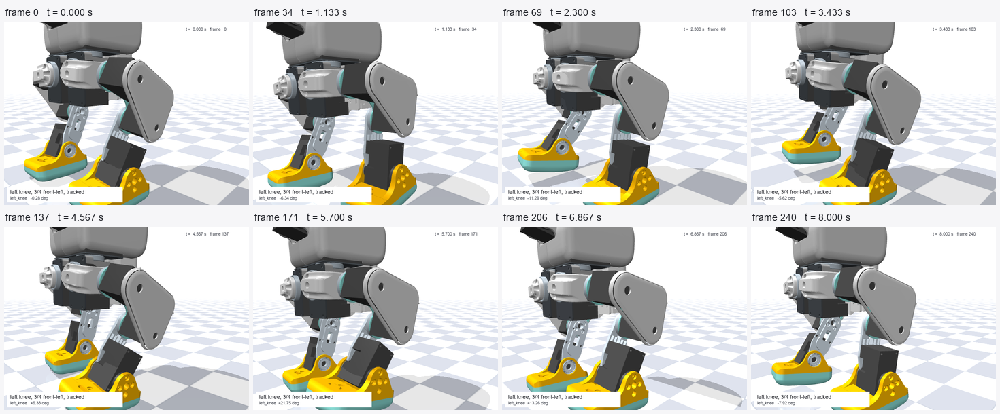
{kind=link}
Camera: track leg, azimuth 225 deg, elevation -8 deg, distance 0.185 m. 241 frames at 30 fps (8.033 s). Read back frame by frame after encoding: PASS — min frame std 65.57 (blank < 4.0), max inter-frame delta 21.4947, blank frames 0, frozen pairs 0. mp4 4.43 MB · GIF 4.56 MB
{kind=link}
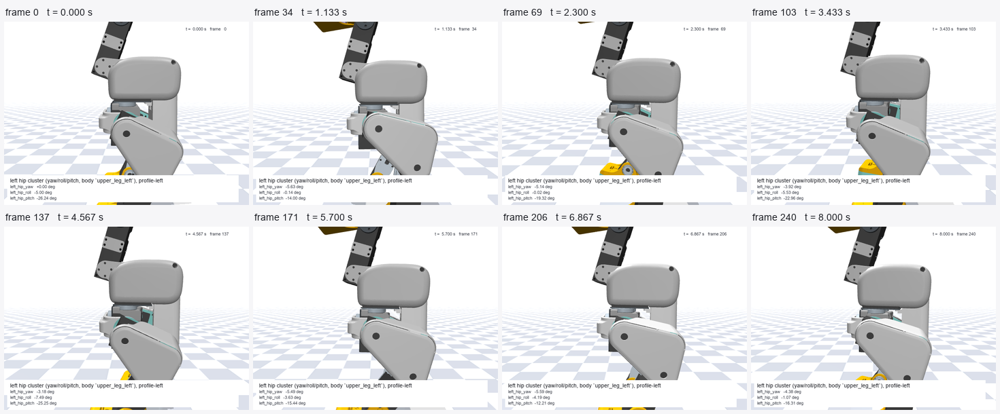
{kind=link}
Camera: track upper_leg_left, azimuth 270 deg, elevation -6 deg, distance 0.190 m. 241 frames at 30 fps (8.033 s). Read back frame by frame after encoding: PASS — min frame std 46.11 (blank < 4.0), max inter-frame delta 10.6458, blank frames 0, frozen pairs 0. mp4 2.56 MB · GIF 3.46 MB
{kind=link}
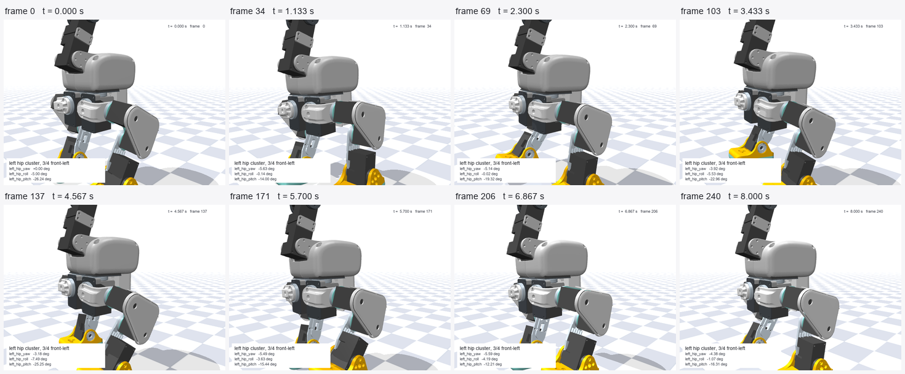
{kind=link}
Camera: track upper_leg_left, azimuth 225 deg, elevation -8 deg, distance 0.200 m. 241 frames at 30 fps (8.033 s). Read back frame by frame after encoding: PASS — min frame std 61.61 (blank < 4.0), max inter-frame delta 14.6648, blank frames 0, frozen pairs 0. mp4 3.72 MB · GIF 4.60 MB
{kind=link}
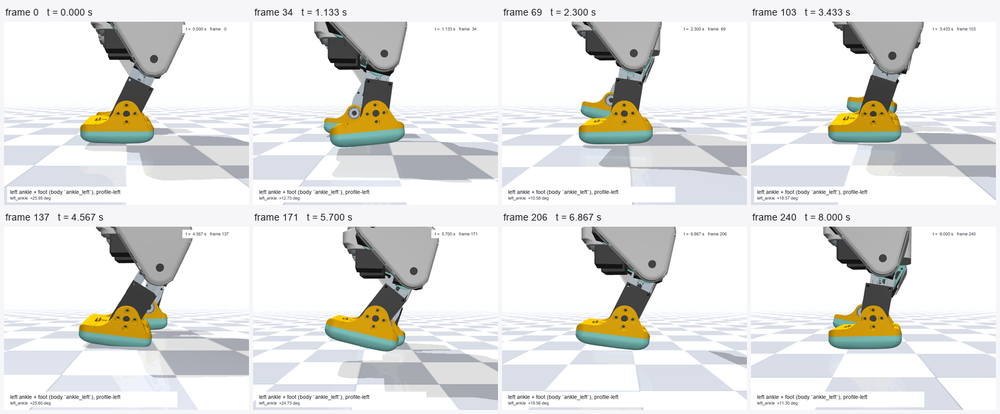
{kind=link}
Camera: track ankle_left, azimuth 270 deg, elevation -4 deg, distance 0.160 m. 241 frames at 30 fps (8.033 s). Read back frame by frame after encoding: PASS — min frame std 48.58 (blank < 4.0), max inter-frame delta 17.4078, blank frames 0, frozen pairs 0. mp4 2.65 MB · GIF 2.66 MB
{kind=link}
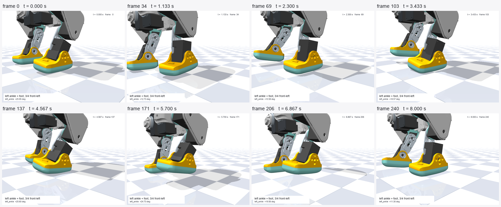
{kind=link}
Camera: track ankle_left, azimuth 225 deg, elevation -8 deg, distance 0.170 m. 241 frames at 30 fps (8.033 s). Read back frame by frame after encoding: PASS — min frame std 62.44 (blank < 4.0), max inter-frame delta 22.1907, blank frames 0, frozen pairs 0. mp4 4.03 MB · GIF 3.76 MB
{kind=link}
What every joint actually does while walking
Travel is the peak-to-peak the joint used, against the MJCF range it has. The last column is how close it ever came to a limit — the gait lives well inside the mechanism.
| joint | MJCF range (deg) | reached (deg) | travel (deg) | % of range | peak vel (deg/s) | at frame | at t (s) | closest to a limit (deg) |
|---|---|---|---|---|---|---|---|---|
| left_hip_yaw | -25.000 … 30.000 | -8.2200 … 0.2744 | 8.4944 | 15.44 % | 52.325 | 55 | 1.100 | 16.7800 |
| left_hip_roll | -22.000 … 22.000 | -7.8328 … 2.6791 | 10.5118 | 23.89 % | 102.969 | 268 | 5.360 | 14.1672 |
| left_hip_pitch | -90.000 … 90.000 | -27.6004 … -11.6055 | 15.9948 | 8.89 % | 153.964 | 63 | 1.260 | 62.3996 |
| left_knee | -90.000 … 90.000 | -14.7477 … 22.1152 | 36.8629 | 20.48 % | 328.803 | 58 | 1.160 | 67.8848 |
| left_ankle | -90.000 … 90.000 | 7.9717 … 27.5767 | 19.6050 | 10.89 % | 181.338 | 51 | 1.020 | 62.4233 |
| right_hip_yaw | -30.000 … 25.000 | 0.0000 … 6.0658 | 6.0658 | 11.03 % | 32.049 | 74 | 1.480 | 18.9342 |
| right_hip_roll | -22.000 … 22.000 | 0.3255 … 7.9280 | 7.6025 | 17.28 % | 93.732 | 346 | 6.920 | 14.0720 |
| right_hip_pitch | -90.000 … 90.000 | 10.8804 … 27.5356 | 16.6553 | 9.25 % | 190.011 | 195 | 3.900 | 62.4644 |
| right_knee | -90.000 … 90.000 | -20.0018 … 9.5050 | 29.5068 | 16.39 % | 285.918 | 156 | 3.120 | 69.9982 |
| right_ankle | -90.000 … 90.000 | -27.6286 … -12.3331 | 15.2954 | 8.50 % | 116.859 | 68 | 1.360 | 62.3714 |
The head during the same run
| joint | MJCF range (deg) | reached (deg) | travel (deg) | % of range | peak vel (deg/s) | at frame | at t (s) | closest to a limit (deg) |
|---|---|---|---|---|---|---|---|---|
| neck_pitch | -90.000 … 60.000 | 12.2053 … 20.0000 | 7.7947 | 5.20 % | 46.980 | 49 | 0.980 | 40.0000 |
| head_pitch | -90.000 … 90.000 | 19.9996 … 24.5276 | 4.5280 | 2.52 % | 22.626 | 49 | 0.980 | 65.4724 |
| head_yaw | -170.000 … 170.000 | -4.2674 … 7.0750 | 11.3424 | 3.34 % | 95.343 | 70 | 1.400 | 162.9250 |
| head_roll | -25.000 … 25.000 | -5.2993 … 0.5689 | 5.8682 | 11.74 % | 56.753 | 72 | 1.440 | 19.7007 |
Gait period method: autocorrelation of left_knee angle over t in [1.5, 7.0] s, lags 0.25-1.60 s (sim/motion_render.py gait_cycle())
Beside the real product
The only published asset of the product performing this motion is Pollen's own portrait
move clip images/moves-portrait-alpha_walk.webm (400 frames, 50 fps, 8.000 s, 800×1280, vp9).
the product asset is Pollen's own rendered move clip, not a photograph; no photograph of the product mid-stride exists in images/ — so this is a render-to-render comparison and is labelled as one, not as a photograph
match. Both gait periods are measured: the product's off the silhouette centroid of its own
pixels, ours off left_knee in the trajectory, each autocorrelated. Both signals are
sampled at 0.020 s, so the agreement is to within one sample — the resolution of the
measurement, not a claim of exact equality.
| gait period (s) | autocorrelation peak | cadence (steps/min) | |
|---|---|---|---|
| product clip (Pollen's render) | 0.4000 | 0.8532 | 300.00 |
| ours, this simulation | 0.4000 | 0.9222 | 300.00 |
| ratio ours / product | 1.0000 | ||
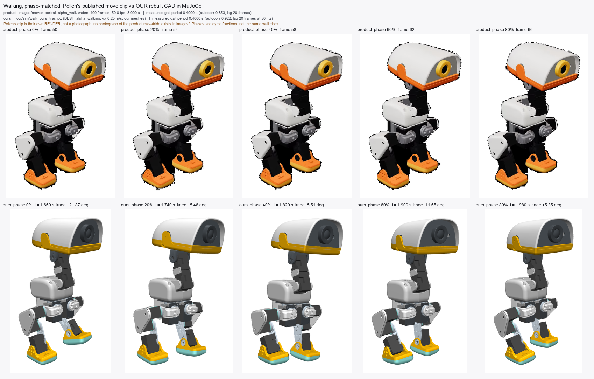
{kind=link}
3The head moving around
The four clips the section-1 numbers were measured on: the full-range sweep from three cameras, and a free look-around.
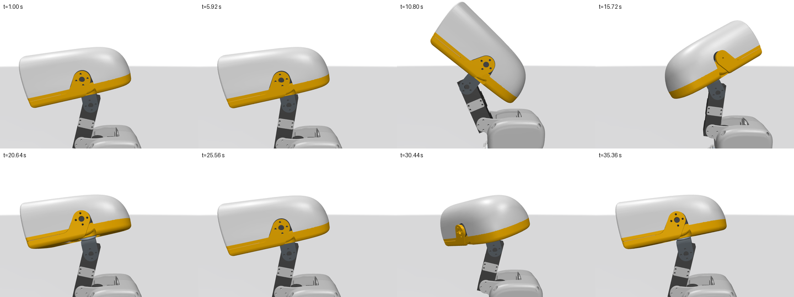
{kind=link}
Camera: profile-left az270 el-4 dist 0.23 m, lookat=body jaw_soft. 860 frames at 25 fps (34.400 s). Every head clip was read back off disk by
sim/head_verify.py; the frames it wrote are in out/motion/frames/. mp4 4.95 MB · GIF 6.10 MB{kind=link}
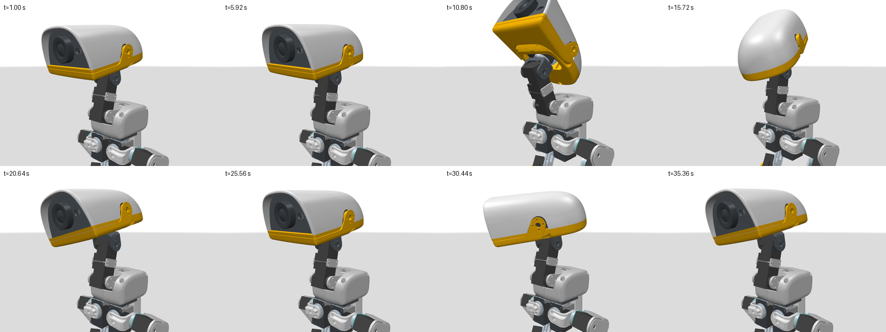
{kind=link}
Camera: 3/4 front-left az225 el-6 dist 0.27 m. 860 frames at 25 fps (34.400 s). Every head clip was read back off disk by
sim/head_verify.py; the frames it wrote are in out/motion/frames/. mp4 6.54 MB · GIF 4.04 MB{kind=link}
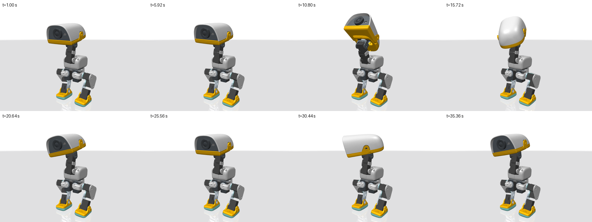
{kind=link}
Camera: 3/4 az215 el-8 dist 0.46 m. 860 frames at 25 fps (34.400 s). Every head clip was read back off disk by
sim/head_verify.py; the frames it wrote are in out/motion/frames/. mp4 4.65 MB · GIF 5.69 MB{kind=link}
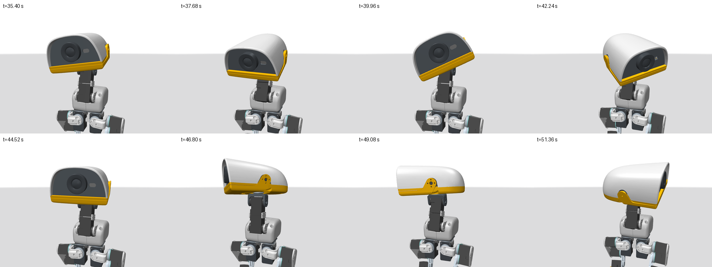
{kind=link}
Camera: 3/4 front az200 el-6 dist 0.32 m, lookat tracks the head. 400 frames at 25 fps (16.000 s). Every head clip was read back off disk by
sim/head_verify.py; the frames it wrote are in out/motion/frames/. mp4 3.37 MB · GIF 3.12 MB{kind=link}
Beside the real robot
images/CATALOG.md:100 — gallery_chorale.mp4 (12 s) 'four robots, jaws moving; jaw range; head roll/yaw expressiveness'. sim/head_real_video.py tracks 360 frames of it and measures
17.0183 deg of head-pitch travel with a peak rate of 62.194 deg/s
(3-frame smoothed; 75.704 deg/s raw). Ours on the same joint is 153.20 deg
at 255.5 deg/s. That settles “not stiff” and nothing more — the clip is a
scripted animation shot hand-held, so it bounds the real robot only from below.
- camera is hand-held: its own roll drift is inside this signal
- head yaw off-profile foreshortens the band and biases the angle
- clip is a scripted animation, not a maximum-rate test — LOWER BOUND only
- no scale or camera calibration is published, so absolute joint angle is not recoverable
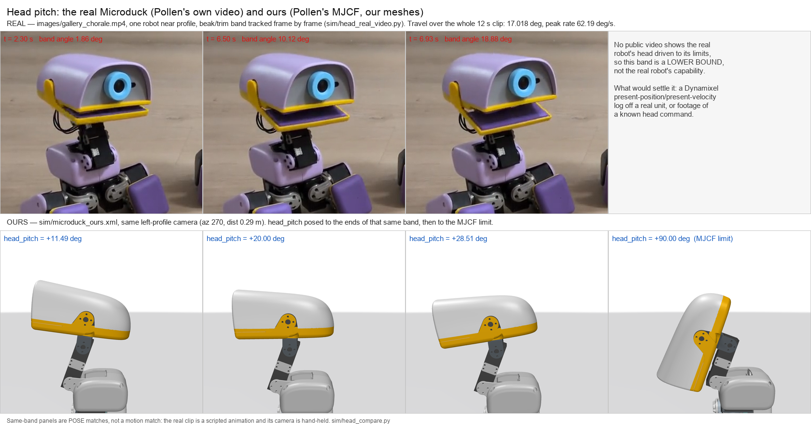
images/gallery_chorale.mp4, at the matched camera (sim/head_compare.py, 603 KB).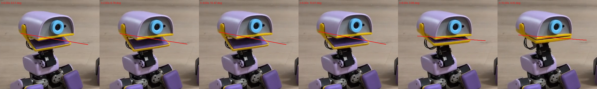
sim/head_real_video.py, 631 KB).4The legs moving around
Every leg joint driven through its whole MJCF range one at a time (trunk pinned,
policy paused, direct ctrl), then by Pollen's own sit-stand and stand policies on the
floor, then in the two-joint and both-leg postures a one-at-a-time sweep can never reach.
Can direct joint targets be used to pose the legs on the floor? No — standing is not an open-loop pose: with the policy paused, a commanded knee flexion of only 11.459 deg pitches the trunk past the 60 deg fall rule. The squat below therefore runs WITH Pollen's stand policy, driven through its body-z command slot - stated because it is the answer to 'can direct joint targets be used'.
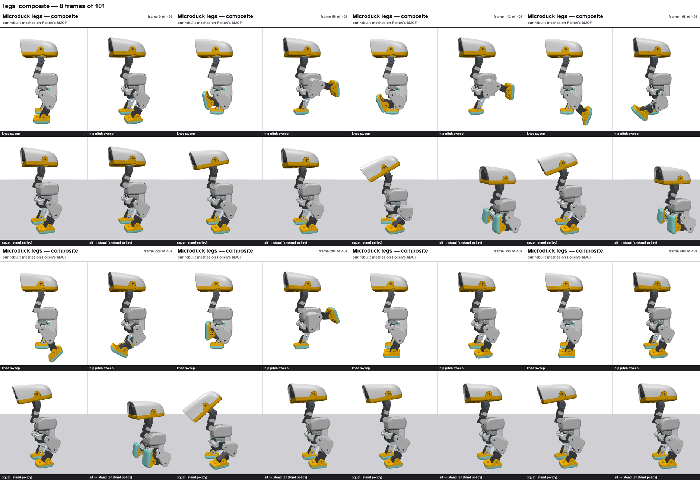
{kind=link}
Camera: full body d 0.46 m, az 270/252. 101 frames at 25 fps (4.040 s). Read back out of the ENCODED mp4 and gif: PASS — mean inter-frame difference 1.6302, max 6.7201, min sampled frame std 64.276. mp4 1.28 MB · GIF 1.48 MB
{kind=link}
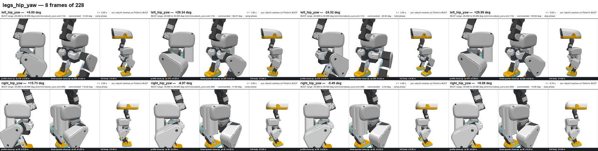
{kind=link}
Camera: profile az 270/90 d 0.20 m; three-quarter az 225/45 d 0.22 m; full body d 0.46 m. 228 frames at 25 fps (9.120 s). Read back out of the ENCODED mp4 and gif: PASS — mean inter-frame difference 1.3635, max 36.3321, min sampled frame std 67.982. mp4 1.91 MB · GIF 3.40 MB
{kind=link}
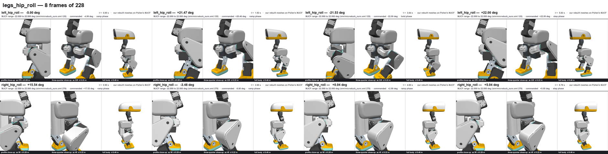
{kind=link}
Camera: profile az 270/90 d 0.20 m; three-quarter az 225/45 d 0.22 m; full body d 0.46 m. 228 frames at 25 fps (9.120 s). Read back out of the ENCODED mp4 and gif: PASS — mean inter-frame difference 1.5249, max 48.1715, min sampled frame std 68.024. mp4 2.01 MB · GIF 3.41 MB
{kind=link}
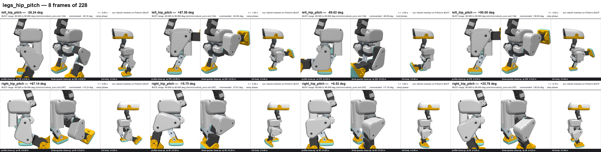
{kind=link}
Camera: profile az 270/90 d 0.20 m; three-quarter az 225/45 d 0.22 m; full body d 0.46 m. 228 frames at 25 fps (9.120 s). Read back out of the ENCODED mp4 and gif: PASS — mean inter-frame difference 3.1361, max 32.8914, min sampled frame std 68.135. mp4 2.61 MB · GIF 3.48 MB
{kind=link}
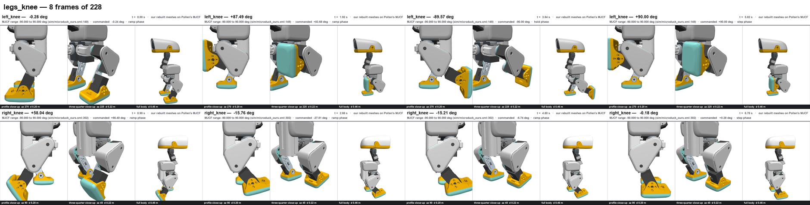
{kind=link}
Camera: profile az 270/90 d 0.20 m; three-quarter az 225/45 d 0.22 m; full body d 0.46 m. 228 frames at 25 fps (9.120 s). Read back out of the ENCODED mp4 and gif: PASS — mean inter-frame difference 2.7215, max 35.4024, min sampled frame std 67.656. mp4 2.17 MB · GIF 3.23 MB
{kind=link}
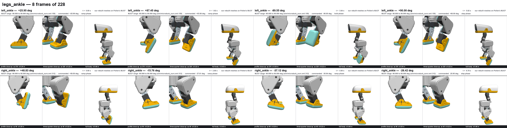
{kind=link}
Camera: profile az 270/90 d 0.20 m; three-quarter az 225/45 d 0.22 m; full body d 0.46 m. 228 frames at 25 fps (9.120 s). Read back out of the ENCODED mp4 and gif: PASS — mean inter-frame difference 0.9243, max 22.2511, min sampled frame std 65.685. mp4 1.32 MB · GIF 2.79 MB
{kind=link}
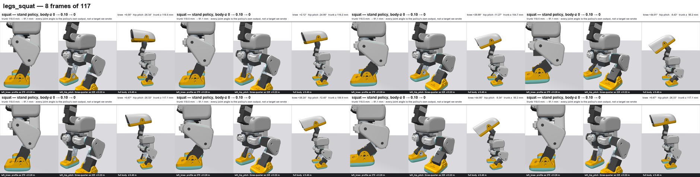
{kind=link}
Camera: knee profile az 270 d 0.20 m; hip-pitch three-quarter az 225 d 0.22 m; full body d 0.46 m. 117 frames at 25 fps (4.680 s). Read back out of the ENCODED mp4 and gif: PASS — mean inter-frame difference 2.4118, max 4.4549, min sampled frame std 68.348. mp4 2.41 MB · GIF 1.98 MB
{kind=link}
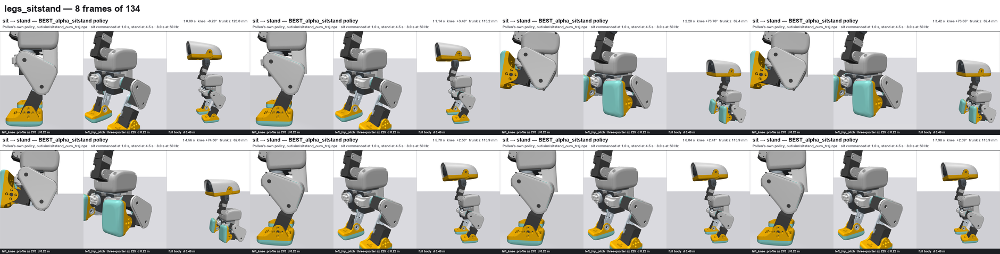
{kind=link}
Camera: knee profile az 270 d 0.20 m; hip-pitch three-quarter az 225 d 0.22 m; full body d 0.46 m. 134 frames at 25 fps (5.360 s). Read back out of the ENCODED mp4 and gif: PASS — mean inter-frame difference 1.8957, max 19.6948, min sampled frame std 65.895. mp4 1.76 MB · GIF 2.16 MB
{kind=link}
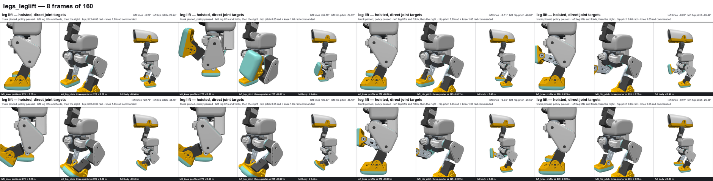
{kind=link}
Camera: knee profile az 270 d 0.20 m; hip-pitch three-quarter az 225 d 0.22 m; full body d 0.46 m. 160 frames at 25 fps (6.400 s). Read back out of the ENCODED mp4 and gif: PASS — mean inter-frame difference 3.1556, max 7.0592, min sampled frame std 75.133. mp4 2.57 MB · GIF 2.56 MB
{kind=link}
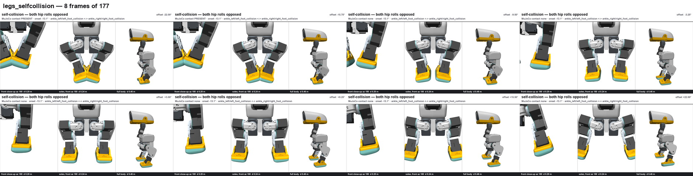
{kind=link}
Camera: front az 180 d 0.20 m; soles az 180 el -20 d 0.24 m; full body d 0.46 m. 177 frames at 25 fps (7.080 s). Read back out of the ENCODED mp4 and gif: PASS — mean inter-frame difference 0.8768, max 2.1039, min sampled frame std 77.704. mp4 2.29 MB · GIF 2.77 MB
{kind=link}
Every leg joint: what the mechanism has, and what it reached
Driven to both MJCF limits with the trunk pinned and the policy paused, so this is the mechanism, not a gait. Tracking RMS is against the commanded ramp.
| joint | MJCF range (deg) | span | reached (deg) | travel | % of range | peak vel (deg/s) | tracking RMS (deg) | MJCF cite |
|---|---|---|---|---|---|---|---|---|
| left_hip_yaw | -25.000 … 30.000 | 55.000 | -24.549 … 29.988 | 54.536 | 99.2 % | 209.958 | 4.475 | sim/microduck_ours.xml:112 |
| left_hip_roll | -22.000 … 22.000 | 44.000 | -21.559 … 22.076 | 43.634 | 99.2 % | 183.040 | 4.020 | sim/microduck_ours.xml:125 |
| left_hip_pitch | -90.000 … 90.000 | 180.000 | -89.635 … 90.499 | 180.135 | 100.1 % | 782.279 | 16.810 | sim/microduck_ours.xml:134 |
| left_knee | -90.000 … 90.000 | 180.000 | -89.596 … 90.263 | 179.859 | 99.9 % | 629.038 | 13.271 | sim/microduck_ours.xml:149 |
| left_ankle | -90.000 … 90.000 | 180.000 | -89.577 … 90.108 | 179.685 | 99.8 % | 451.923 | 10.591 | sim/microduck_ours.xml:159 |
| right_hip_yaw | -30.000 … 25.000 | 55.000 | -29.547 … 24.929 | 54.476 | 99.0 % | 174.715 | 3.949 | sim/microduck_ours.xml:265 |
| right_hip_roll | -22.000 … 22.000 | 44.000 | -21.557 … 21.972 | 43.529 | 98.9 % | 114.998 | 2.960 | sim/microduck_ours.xml:278 |
| right_hip_pitch | -90.000 … 90.000 | 180.000 | -89.644 … 90.316 | 179.960 | 100.0 % | 435.422 | 10.699 | sim/microduck_ours.xml:287 |
| right_knee | -90.000 … 90.000 | 180.000 | -89.598 … 90.330 | 179.929 | 100.0 % | 626.710 | 13.200 | sim/microduck_ours.xml:302 |
| right_ankle | -90.000 … 90.000 | 180.000 | -89.578 … 90.286 | 179.864 | 99.9 % | 797.878 | 16.457 | sim/microduck_ours.xml:312 |
What Pollen's own gaits use of that range
The same ten joints under the three policies — the working envelope against the mechanism above.
Walk: BEST_alpha_walking at 0.25 m/s. Sit-stand:
BEST_alpha_sitstand. Squat: BEST_alpha_stand driven through its body-z
command slot.
| joint | MJCF span | walk travel (% of range) | walk peak vel | sit-stand travel (% of range) | sit-stand peak vel | squat travel | squat peak vel |
|---|---|---|---|---|---|---|---|
| left_hip_yaw | 55.000 | 8.494 15.4 % | 52.33 | 15.136 27.5 % | 163.56 | 14.050 | 28.66 |
| left_hip_roll | 44.000 | 10.512 23.9 % | 102.97 | 16.711 38.0 % | 113.96 | 2.656 | 8.22 |
| left_hip_pitch | 180.000 | 15.995 8.9 % | 153.96 | 27.918 15.5 % | 325.65 | 22.340 | 41.94 |
| left_knee | 180.000 | 36.863 20.5 % | 328.80 | 75.606 42.0 % | 423.63 | 55.979 | 68.60 |
| left_ankle | 180.000 | 19.605 10.9 % | 181.34 | 42.276 23.5 % | 380.21 | 34.363 | 58.65 |
| right_hip_yaw | 55.000 | 6.066 11.0 % | 32.05 | 16.906 30.7 % | 115.96 | 13.411 | 37.34 |
| right_hip_roll | 44.000 | 7.602 17.3 % | 93.73 | 17.355 39.4 % | 166.28 | 5.317 | 10.91 |
| right_hip_pitch | 180.000 | 16.655 9.3 % | 190.01 | 26.754 14.9 % | 372.12 | 20.160 | 35.61 |
| right_knee | 180.000 | 29.507 16.4 % | 285.92 | 80.144 44.5 % | 730.69 | 58.394 | 76.61 |
| right_ankle | 180.000 | 15.295 8.5 % | 116.86 | 27.961 15.5 % | 335.77 | 39.719 | 62.11 |
All ten joints reach their full MJCF span to within 0.524 deg (travel fraction 0.989–1.001 of range). The fastest step response measured anywhere in the legs is right_ankle at 797.878 deg/s. The MJCF actuator is NOT the datasheet servo. Pollen's class chosen_actuator gives every leg joint forcerange +-0.96 N.m, while the repo's verified entry for the fitted servo (Dynamixel XL330-M288-T, out/verify/electronics_verify.json, ROBOTIS eManual cited there) gives stall 0.52 N.m at 5.0 V - the model is 1.846x stronger than the cited stall torque. The class also sets kv = 0 and the model carries NO joint velocity limit, so the step-response peak velocities below are what the MODEL can do, not what the servo can do. The XL330's no-load speed is not recorded anywhere in this repo: CANNOT DETERMINE, and it must be added before any of these peak velocities is quoted as a hardware capability.
Squat, sit-stand and single-leg lift
The squat runs with Pollen's stand policy, driven through its body-z command slot: trunk
0.11873 m → 0.09106 m (27.48 mm), maximum tilt 1.45 deg,
did not fall — and every joint angle in that clip is the policy's own output, not a target we wrote.
The sit-stand clip re-renders the existing out/sim/sitstand_ours_traj.npz run. The leg lift is hoisted
(trunk pinned, policy paused): left hip pitch 48.084 deg and knee 59.487 deg of
travel, then the right.
Self-collision — every posture where the mechanism touches itself
One joint at a time, with the others at DEFAULT_POSE, 0 of 10 sweeps
touch anything. The interesting cases need two joints off default, or both legs together —
7 postures do touch, and each is named with the geom pair, the angle at which it first
touches and the deepest convex-hull penetration. MuJoCo collides mesh geoms as their convex hulls,
so these onsets are conservative.
| posture | geom pair | onset (deg) | max penetration (mm) | verdict |
|---|---|---|---|---|
| left_knee swept, left_hip_pitch pinned at MJCF lo (-90.000 deg) two joints · swept -90.000 … 90.000° | hip_l/hip_l <-> leg/leg | 69.600 | 6.0239 | TOUCHES in contact 69.600 … 90.000° |
| left_knee swept, left_hip_pitch pinned at MJCF hi (90.000 deg) two joints · swept -90.000 … 90.000° | — | — | — | CLEAR |
| left_ankle swept, left_knee pinned at MJCF lo (-90.000 deg) two joints · swept -90.000 … 90.000° | — | — | — | CLEAR |
| left_ankle swept, left_knee pinned at MJCF hi (90.000 deg) two joints · swept -90.000 … 90.000° | ankle_left/left_foot_collision <-> hip_l/hip_l | 19.400 | 11.1946 | TOUCHES in contact -90.000 … 19.400° |
| left_hip_pitch swept, left_hip_roll pinned at MJCF lo (-22.000 deg) two joints · swept -90.000 … 90.000° | — | — | — | CLEAR |
| left_hip_pitch swept, left_hip_roll pinned at MJCF hi (22.000 deg) two joints · swept -90.000 … 90.000° | leg/leg <-> trunk_base/np_f970 | 75.300 | 2.8447 | TOUCHES in contact 75.300 … 90.000° |
| right_knee swept, right_hip_pitch pinned at MJCF lo (-90.000 deg) two joints · swept -90.000 … 90.000° | — | — | — | CLEAR |
| right_knee swept, right_hip_pitch pinned at MJCF hi (90.000 deg) two joints · swept -90.000 … 90.000° | hip_l_2/hip_l <-> leg_2/leg | -69.600 | 6.0229 | TOUCHES in contact -90.000 … -69.600° |
| right_ankle swept, right_knee pinned at MJCF lo (-90.000 deg) two joints · swept -90.000 … 90.000° | ankle_right/right_foot_collision <-> hip_l_2/hip_l | -19.400 | 11.1946 | TOUCHES in contact -19.400 … 90.000° |
| right_ankle swept, right_knee pinned at MJCF hi (90.000 deg) two joints · swept -90.000 … 90.000° | — | — | — | CLEAR |
| right_hip_pitch swept, right_hip_roll pinned at MJCF lo (-22.000 deg) two joints · swept -90.000 … 90.000° | leg_2/leg <-> trunk_base/np_f970 | -75.300 | 2.8420 | TOUCHES in contact -90.000 … -75.300° |
| right_hip_pitch swept, right_hip_roll pinned at MJCF hi (22.000 deg) two joints · swept -90.000 … 90.000° | — | — | — | CLEAR |
| left_hip_roll + right_hip_roll sign (1.0, 1.0) (hip roll, same sense) both legs · swept -22.000 … 22.000° | — | — | — | CLEAR |
| left_hip_roll + right_hip_roll sign (1.0, -1.0) (hip roll, opposed (knees in/out)) both legs · swept -22.000 … 22.000° | ankle_left/left_foot_collision <-> ankle_right/right_foot_collision | -13.100 | 12.6501 | TOUCHES in contact -22.000 … -13.100° |
| left_hip_yaw + right_hip_yaw sign (1.0, -1.0) (hip yaw, opposed (toes in/out)) both legs · swept -27.500 … 27.500° | — | — | — | CLEAR |
| left_hip_pitch + right_hip_pitch sign (1.0, 1.0) (hip pitch, same sense (scissor)) both legs · swept -90.000 … 90.000° | — | — | — | CLEAR |
| left_knee + right_knee sign (1.0, -1.0) (knee, opposed) both legs · swept -90.000 … 90.000° | — | — | — | CLEAR |
the seven self-collisions all sit OUTSIDE the envelope Pollen's own policies use: the sit-stand run never uses more than 44.5 % of any leg joint's MJCF range, never comes within 1 deg of a limit, and neither it nor the walk produces a single self-contact frame. The MJCF limits are therefore not self-collision-safe on their own - they are safe for the gaits shipped, and a hand-driven pose can reach a touch.
A check that cannot fail is not a check
a check that cannot fail is not a check - the self-collision detector was broken on purpose and watched to fire, in the same model, before any CLEAR verdict below was trusted
| control | result | verdict |
|---|---|---|
| negative control — DEFAULT_POSE, trunk at 0 0 0.12 | 0 self-contacts | silent, as it must be |
| positive control — left_hip_roll -22.000 deg and right_hip_roll +22.000 deg (both driven inward) | 1 self-contacts | detector fires |
| positive control — left_knee +90.000 deg with left_hip_pitch -90.000 deg | 4 self-contacts | detector fires |
mujoco 3.12.0, mj_forward on the scene_xml() wrap of sim/microduck_ours_allcollisions.xml; floor contacts excluded by geom id
legs_sweep_tracking.png — 299 KB
legs_envelope.png — 41 KB
legs_selfcollision_plot.png — 77 KB
sim/leg_compare.py, 290 KB).
sim/leg_compare.py, 437 KB).5How to regenerate every frame and number on this page
MuJoCo, onnxruntime, numpy and PIL live only in FreeCAD's python on this machine.
The system python3 has none of them — it runs the document generators only.
PY=/Applications/FreeCAD.app/Contents/Resources/bin/python # or: ce-cad/bin/cad <script.py> cd /Users/leifrydenfalk/dev/ce-workshop/ce-designs/microduck $PY sim/swap_meshes.py # OUR meshes onto Pollen's MJCF, bbox-checked $PY sim/run_policy.py --all # the trajectories every number is read off $PY sim/head_sweep.py # section 1 + 3: head.json, head_traj.npz, 4 clips $PY sim/head_real_video.py # the real-robot head track $PY sim/head_compare.py # ours beside the real head $PY sim/head_verify.py # read every head clip back $PY sim/motion_render.py --all # section 2: walk.json, 9 clips $PY sim/walk_vs_product.py # our gait phase-matched to Pollen's clip $PY sim/leg_sweep.py # section 4: legs.json, the self-collision sweeps $PY sim/leg_render.py # 10 leg clips (no args = all) $PY sim/leg_plots.py # the leg figures $PY sim/leg_framing.py # frustum proof the close-ups contain the servo $PY sim/leg_compare.py # ours beside the product photographs $PY sim/leg_verify.py # read every leg clip back out of the ENCODED file $PY sim/leg_verify.py --self-test # break it on purpose: blank / frozen / truncated all refused python3 tools/gen_motion.py # this document python3 tools/gen_index.py # relist it on the front door
| script | what it does | command | state |
|---|---|---|---|
| sim/swap_meshes.py | Puts OUR rebuilt meshes on Pollen's MJCF (visual geoms only) and refuses unless both models compile and every re-pointed geom's zero-pose world bbox is within 1.5 mm of the stock geom. | $PY sim/swap_meshes.py | present |
| sim/run_policy.py | Runs Pollen's published ONNX policies at their own 50 Hz loop and writes the trajectories every measurement below is read off. | $PY sim/run_policy.py --all | present |
| sim/head_sweep.py | Drives the four head command slots through their full MJCF range under the stand policy, measures travel / velocity / lag / torque, and probes the self-collision-free range. Writes out/motion/head.json + head_traj.npz. | $PY sim/head_sweep.py | present |
| sim/head_real_video.py | Tracks the real robot's head frame by frame in Pollen's gallery clip. Writes out/motion/head_real_video.json. | $PY sim/head_real_video.py | present |
| sim/head_compare.py | Puts our head beside the real one at the same camera. | $PY sim/head_compare.py | present |
| sim/head_verify.py | Reads every head clip back off disk and refuses blank or frozen frames. | $PY sim/head_verify.py | present |
| sim/motion_render.py | Films the walk: the tracked close-ups, the 2×2 composite and the 0.25× gait cycle, and measures every joint. Writes out/motion/walk.json. | $PY sim/motion_render.py --all | present |
| sim/walk_vs_product.py | Phase-matches our walk against Pollen's own move clip; measures both gait periods. Writes out/motion/walk_vs_product.json. | $PY sim/walk_vs_product.py | present |
| sim/leg_sweep.py | Sweeps every leg joint through its MJCF range, one at a time and in the two-joint and both-leg postures, and finds every self-collision with its onset angle. Writes out/motion/legs.json. | $PY sim/leg_sweep.py | present |
| sim/leg_render.py | Films the legs: per-joint tracked close-ups, squat, sit-stand, leg lift, the self-collision case and the composite. | $PY sim/leg_render.py # no args = every clip | present |
| sim/leg_plots.py | Draws the tracking, envelope and self-collision figures from the same arrays as the numbers. | $PY sim/leg_plots.py | present |
| sim/leg_framing.py | Projects every servo and bearing geom into each close-up frustum, to prove the close-ups contain the hardware they claim to show. | $PY sim/leg_framing.py | present |
| sim/leg_compare.py | Puts our standing and sitting renders beside the product photographs at the same subject height. | $PY sim/leg_compare.py | present |
| sim/leg_verify.py | Reads every leg clip back out of the ENCODED mp4 and gif and refuses blank, frozen, truncated or oversized ones; --self-test breaks it on purpose. | $PY sim/leg_verify.py | present |
| sim/compare_render.py | The studio renderer every frame above is drawn with: white sky, no floor, headlight 0.45 / ambient 0.28, the real product material per geom. | — | present |
| tools/gen_motion.py | Builds THIS document from out/motion/*.json, stat()ing every asset first. | python3 tools/gen_motion.py | present |
| tools/gen_index.py | Rebuilds INDEX.html so this document is listed. | python3 tools/gen_index.py | present |
The data this page is generated from
No table on this page is hand-maintained. Every number comes out of these files, and every one of them is written by a script above.
| file | size | state |
|---|---|---|
| out/motion/head.json | 14 KB | present |
| out/motion/head_real_video.json | 21 KB | present |
| out/motion/walk.json | 13 KB | present |
| out/motion/walk_vs_product.json | 1 KB | present |
| out/motion/legs.json | 47 KB | present |
| out/motion/legs_videos.json | 14 KB | present |
| out/motion/legs_compare.json | 339 B | present |
| out/motion/head_traj.npz | 766 KB | present |
| out/sim/walk_ours_traj.npz | 252 KB | present |
| out/sim/sitstand_ours_traj.npz | 247 KB | present |
| sim/microduck_ours.xml | 29 KB | present |
| sim/microduck_ours_allcollisions.xml | 30 KB | present |
| reference/pollen-microduck-rl/robot_walk.xml | 31 KB | present |
| reference/pollen-microduck-rl/joints_properties.xml | 2 KB | present |
Asset audit — every file this page points at
Stat()ed before the document was written, the way tools/gen_index.py stats every
index entry. 131 referenced, 0 missing. A missing asset is published as
missing and the generator exits non-zero.
| path | kind | size | state |
|---|---|---|---|
| out/motion/compare_sitting.png | figure | 437 KB | present |
| out/motion/compare_standing_profile.png | figure | 290 KB | present |
| out/motion/frames/head_lookaround_f0112.png | frame | 78 KB | present |
| out/motion/frames/head_sweep_3q_f0240.png | frame | 112 KB | present |
| out/motion/frames/head_sweep_body_f0240.png | frame | 86 KB | present |
| out/motion/frames/head_sweep_profile_f0240.png | frame | 75 KB | present |
| out/motion/frames/legs_ankle_032.png | frame | 126 KB | present |
| out/motion/frames/legs_composite_014.png | frame | 141 KB | present |
| out/motion/frames/legs_hip_pitch_032.png | frame | 135 KB | present |
| out/motion/frames/legs_hip_roll_032.png | frame | 139 KB | present |
| out/motion/frames/legs_hip_yaw_032.png | frame | 134 KB | present |
| out/motion/frames/legs_knee_032.png | frame | 128 KB | present |
| out/motion/frames/legs_leglift_022.png | frame | 140 KB | present |
| out/motion/frames/legs_selfcollision_025.png | frame | 156 KB | present |
| out/motion/frames/legs_sitstand_019.png | frame | 143 KB | present |
| out/motion/frames/legs_squat_016.png | frame | 144 KB | present |
| out/motion/frames/walk_ankle_34_f000.png | frame | 85 KB | present |
| out/motion/frames/walk_ankle_prof_f000.png | frame | 52 KB | present |
| out/motion/frames/walk_body_f000.png | frame | 162 KB | present |
| out/motion/frames/walk_composite_f000.png | frame | 279 KB | present |
| out/motion/frames/walk_hip_34_f000.png | frame | 92 KB | present |
| out/motion/frames/walk_hip_prof_f000.png | frame | 63 KB | present |
| out/motion/frames/walk_knee_34_f000.png | frame | 102 KB | present |
| out/motion/frames/walk_knee_prof_f000.png | frame | 65 KB | present |
| out/motion/frames/walk_slowmo_f000.png | frame | 218 KB | present |
| out/motion/head.json | data | 14 KB | present |
| out/motion/head_lookaround.gif | gif | 3.12 MB | present |
| out/motion/head_lookaround.mp4 | mp4 | 3.37 MB | present |
| out/motion/head_lookaround_sheet.png | contact sheet | 205 KB | present |
| out/motion/head_real_video.json | data | 21 KB | present |
| out/motion/head_real_video_overlay.png | figure | 631 KB | present |
| out/motion/head_sweep_3q.gif | gif | 4.04 MB | present |
| out/motion/head_sweep_3q.mp4 | mp4 | 6.54 MB | present |
| out/motion/head_sweep_3q_sheet.png | contact sheet | 250 KB | present |
| out/motion/head_sweep_body.gif | gif | 5.69 MB | present |
| out/motion/head_sweep_body.mp4 | mp4 | 4.65 MB | present |
| out/motion/head_sweep_body_sheet.png | contact sheet | 206 KB | present |
| out/motion/head_sweep_profile.gif | gif | 6.10 MB | present |
| out/motion/head_sweep_profile.mp4 | mp4 | 4.95 MB | present |
| out/motion/head_sweep_profile_sheet.png | contact sheet | 179 KB | present |
| out/motion/head_traj.npz | data | 766 KB | present |
| out/motion/head_vs_real.png | figure | 603 KB | present |
| out/motion/legs.json | data | 47 KB | present |
| out/motion/legs_ankle.gif | gif | 2.79 MB | present |
| out/motion/legs_ankle.mp4 | mp4 | 1.32 MB | present |
| out/motion/legs_ankle_sheet.png | contact sheet | 247 KB | present |
| out/motion/legs_compare.json | data | 339 B | present |
| out/motion/legs_composite.gif | gif | 1.48 MB | present |
| out/motion/legs_composite.mp4 | mp4 | 1.28 MB | present |
| out/motion/legs_composite_sheet.png | contact sheet | 591 KB | present |
| out/motion/legs_envelope.png | figure | 41 KB | present |
| out/motion/legs_hip_pitch.gif | gif | 3.48 MB | present |
| out/motion/legs_hip_pitch.mp4 | mp4 | 2.61 MB | present |
| out/motion/legs_hip_pitch_sheet.png | contact sheet | 336 KB | present |
| out/motion/legs_hip_roll.gif | gif | 3.41 MB | present |
| out/motion/legs_hip_roll.mp4 | mp4 | 2.01 MB | present |
| out/motion/legs_hip_roll_sheet.png | contact sheet | 287 KB | present |
| out/motion/legs_hip_yaw.gif | gif | 3.40 MB | present |
| out/motion/legs_hip_yaw.mp4 | mp4 | 1.91 MB | present |
| out/motion/legs_hip_yaw_sheet.png | contact sheet | 272 KB | present |
| out/motion/legs_knee.gif | gif | 3.23 MB | present |
| out/motion/legs_knee.mp4 | mp4 | 2.17 MB | present |
| out/motion/legs_knee_sheet.png | contact sheet | 324 KB | present |
| out/motion/legs_leglift.gif | gif | 2.56 MB | present |
| out/motion/legs_leglift.mp4 | mp4 | 2.57 MB | present |
| out/motion/legs_leglift_sheet.png | contact sheet | 391 KB | present |
| out/motion/legs_selfcollision.gif | gif | 2.77 MB | present |
| out/motion/legs_selfcollision.mp4 | mp4 | 2.29 MB | present |
| out/motion/legs_selfcollision_plot.png | figure | 77 KB | present |
| out/motion/legs_selfcollision_sheet.png | contact sheet | 359 KB | present |
| out/motion/legs_sitstand.gif | gif | 2.16 MB | present |
| out/motion/legs_sitstand.mp4 | mp4 | 1.76 MB | present |
| out/motion/legs_sitstand_sheet.png | contact sheet | 398 KB | present |
| out/motion/legs_squat.gif | gif | 1.98 MB | present |
| out/motion/legs_squat.mp4 | mp4 | 2.41 MB | present |
| out/motion/legs_squat_sheet.png | contact sheet | 428 KB | present |
| out/motion/legs_sweep_tracking.png | figure | 299 KB | present |
| out/motion/legs_videos.json | data | 14 KB | present |
| out/motion/walk.json | data | 13 KB | present |
| out/motion/walk_ankle_34.gif | gif | 3.76 MB | present |
| out/motion/walk_ankle_34.mp4 | mp4 | 4.03 MB | present |
| out/motion/walk_ankle_34_sheet.png | contact sheet | 472 KB | present |
| out/motion/walk_ankle_prof.gif | gif | 2.66 MB | present |
| out/motion/walk_ankle_prof.mp4 | mp4 | 2.65 MB | present |
| out/motion/walk_ankle_prof_sheet.png | contact sheet | 294 KB | present |
| out/motion/walk_body.gif | gif | 4.92 MB | present |
| out/motion/walk_body.mp4 | mp4 | 5.91 MB | present |
| out/motion/walk_body_sheet.png | contact sheet | 502 KB | present |
| out/motion/walk_composite.gif | gif | 5.22 MB | present |
| out/motion/walk_composite.mp4 | mp4 | 11.38 MB | present |
| out/motion/walk_composite_sheet.png | contact sheet | 569 KB | present |
| out/motion/walk_hip_34.gif | gif | 4.60 MB | present |
| out/motion/walk_hip_34.mp4 | mp4 | 3.72 MB | present |
| out/motion/walk_hip_34_sheet.png | contact sheet | 503 KB | present |
| out/motion/walk_hip_prof.gif | gif | 3.46 MB | present |
| out/motion/walk_hip_prof.mp4 | mp4 | 2.56 MB | present |
| out/motion/walk_hip_prof_sheet.png | contact sheet | 334 KB | present |
| out/motion/walk_knee_34.gif | gif | 4.56 MB | present |
| out/motion/walk_knee_34.mp4 | mp4 | 4.43 MB | present |
| out/motion/walk_knee_34_sheet.png | contact sheet | 550 KB | present |
| out/motion/walk_knee_prof.gif | gif | 3.38 MB | present |
| out/motion/walk_knee_prof.mp4 | mp4 | 3.11 MB | present |
| out/motion/walk_knee_prof_sheet.png | contact sheet | 353 KB | present |
| out/motion/walk_slowmo.gif | gif | 3.19 MB | present |
| out/motion/walk_slowmo.mp4 | mp4 | 1.56 MB | present |
| out/motion/walk_slowmo_sheet.png | contact sheet | 362 KB | present |
| out/motion/walk_vs_product.json | data | 1 KB | present |
| out/motion/walk_vs_product.png | figure | 752 KB | present |
| out/sim/sitstand_ours_traj.npz | data | 247 KB | present |
| out/sim/walk_ours_traj.npz | data | 252 KB | present |
| reference/pollen-microduck-rl/joints_properties.xml | data | 2 KB | present |
| reference/pollen-microduck-rl/robot_walk.xml | data | 31 KB | present |
| sim/compare_render.py | script | 6 KB | present |
| sim/head_compare.py | script | 6 KB | present |
| sim/head_real_video.py | script | 5 KB | present |
| sim/head_sweep.py | script | 27 KB | present |
| sim/head_verify.py | script | 2 KB | present |
| sim/leg_compare.py | script | 6 KB | present |
| sim/leg_framing.py | script | 5 KB | present |
| sim/leg_plots.py | script | 6 KB | present |
| sim/leg_render.py | script | 17 KB | present |
| sim/leg_sweep.py | script | 33 KB | present |
| sim/leg_verify.py | script | 4 KB | present |
| sim/microduck_ours.xml | data | 29 KB | present |
| sim/microduck_ours_allcollisions.xml | data | 30 KB | present |
| sim/motion_render.py | script | 26 KB | present |
| sim/run_policy.py | script | 16 KB | present |
| sim/swap_meshes.py | script | 12 KB | present |
| sim/walk_vs_product.py | script | 10 KB | present |
| tools/gen_index.py | script | 18 KB | present |
| tools/gen_motion.py | script | 49 KB | present |
← repository index · head dossier · walk dossier · leg dossier · reference match